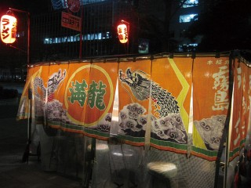

グルメなまち 福岡で食い倒れ おすすめ体験プログラム
-
ポイント１
郷土料理 もつ鍋を楽しむ
福岡・博多の郷土料理といえば、やっぱりもつ鍋！ここ「もつ鍋 一藤」は、一鍋一鍋注文を受けてから作るこだわりと、透き通るような上質で大ぶりなもつを使用した人気店です。特別コースをどうぞ。おひとりさまでもＯＫ！
郷土料理 もつ鍋を楽しむ（もつ鍋 一藤）
所要時間 約90分 使用チケット枚数 2枚 営業時間 17:00～24:00 定休日 不定休（年に3～4日) ご予約 当日予約可
（092-715-7733）所在地 福岡県福岡市中央区今泉1-9-19 今泉Bulala 6F アクセス ■天神より… 西鉄福岡(天神)駅より徒歩5分
■博多より…「博多バスターミナル4番のりば」より200番台に乗車、「天神警固神社・三越前」下車、徒歩3分
-
ポイント2
九州の旨い海の幸を楽しむ
その日の仕入れで決まるメニューが好評で、食通のお客さんも足しげく通う「大衆・隠・台所 久岡屋」。中でも、くじら料理には定評があり、専門店でしか食べられないような珍しい部位も揃います。くじらの刺身、珍味６種パレット、本日の焼き魚に日本酒一杯が付いたミニコースをお楽しみ下さい。
九州の旨い海の幸を楽しむ（大衆・隠・台所 久岡家）
所要時間 約60分 使用チケット枚数 2枚 営業時間 15:00～22:00 定休日 不定休 ご予約 当日予約可
（092-771-1360）所在地 福岡県福岡市中央区春吉3-13-28 アクセス ■天神より…西鉄福岡(天神)より徒歩10分
■博多より…「博多バスターミナル4番のりば」より68番・200番台に乗車、「春吉」下車、徒歩7分 -
ポイント3
屋台はしご体験！
屋台に行きたいけど一見だと入りにくい!料金はどうなのか?そんな皆さんに、安心して入れる博多の屋台をおすすめします。
各屋台1,000円でド リンク一杯+おすすめメニューを!
おひとりで二軒ハシゴも!お二人でお好きな屋台へ!もちろんチケット以外の追加メニューもOK!博多の屋台を楽しんでください。屋台はしご体験！
所要時間 店舗により異なります 使用チケット枚数 各店舗、チケット１枚でドリンク一杯＋各店おすすめメニューが楽しめます。 営業時間 店舗により異なります 定休日 店舗により異なります ご予約 店舗により異なります 所在地 福岡県福岡市中央区天神 アクセス 店舗により異なります -
ポイント4
山笠＆博多談義も楽しめる
博多まるごとセットを体験博多の総鎮守・櫛田神社にある「博多おっぺけぺ」。うどん・おきゅうと・明太子・がめ煮・胡麻さば・餃子など、博多の名物がずらりとぶ、「博多まるごとセット」。博多の名物が一挙に味わえるボリューム満点のセットです。
博多まるごとセットを体験（博多おっぺけぺい（博多あかちょこべい））
所要時間 約90分 使用チケット枚数 2枚 営業時間 11:30～14:00 18:00～24:00 定休日 日曜、祝日 ご予約 前日までに予約
（092-271-0150）所在地 福岡県福岡市博多区冷泉町7-10 アクセス ■天神より…「天神一丁目」より8番に乗車、「キャナルシティ博多前」下車、徒歩5分
■博多より…「博多バスターミナル4番のりば」より68番・200番台に乗車、「キャナルシティ博多前」下車、徒歩5分 -
 ポイント5
ポイント5新鮮な玄界灘の海の幸
豪華な寿司ランチコース！胡麻さばやヤリイカ、穴子、かんぱち、生さんま、いさき…など玄界灘の新鮮な海の幸が揃う「寿司処 いずみ田」。付きだし、小鉢、刺身、季節の料理、にぎり８貫、赤だし、茶わん蒸し、デザートのコースにソフトドリンク１杯が付いた豪華なランチをお楽しみください。
豪華な寿司ランチコース！（寿司処 いずみ田）
所要時間 約90分 使用チケット枚数 2枚 営業時間 11:30～14:00 定休日 日曜、年末年始 ご予約 当日予約可
（092-725-6412）所在地 福岡県福岡市中央区渡辺通5-24-30 東カンビルB1F アクセス ■天神より…西鉄福岡（天神）駅より徒歩3分
■博多より…「博多バスターミナル4番のりば」より68番・200番台に乗車、「天神一丁目」下車、徒歩1分